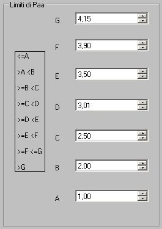
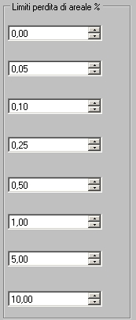

1 Scelta dei valori di soglia dell'indicatore Paa
Gli intervalli corrispondenti ai valori di soglia sono indicati nella tabellina a sinistra

Nel caso in figura i valori di Paa corrispondono ai seguenti intervalli:
Paa<=1
Paa >1 e Paa<2
Paa>=2 e Paa<2.50
Paa>=2.50 e Paa<3.01
Paa>=3.01 e Paa<3.50
Paa>=3.50 e Paa<3.90
Paa>=3.90 e Paa<=4.15
Paa>4.15
1 Scelta dei valori di percentuale di perdita areale
E' possibile scegliere la perdita percentuale di areale corrispondente all'intervallo di Paa
